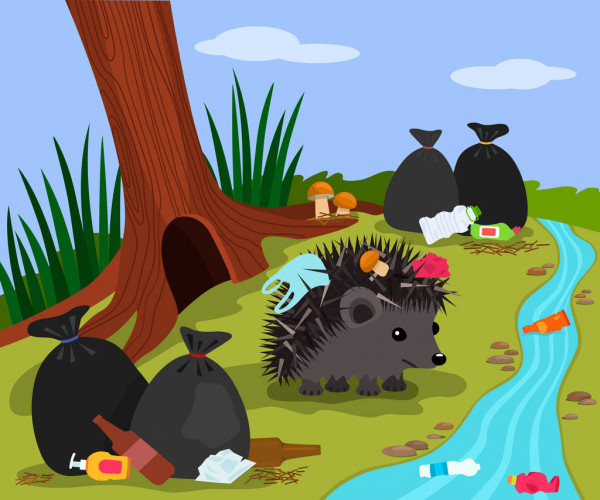

Consequência do descarte do lixo
O descarte inadequado de lixo leva à formação de ilhas de lixo nos rios, prejudicando a sobrevivência da fauna e flora de diversas regiões. ... Outro problema causado pelo descarte de lixo nos rios é a proliferação de insetos vetores de doenças, como o Aedes aegypti, que causa a dengue, a zica e a chikungunya.
O descarte inadequado de lixo leva à formação de ilhas de lixo nos rios, prejudicando a sobrevivência da fauna e flora de diversas regiões. ... Outro problema causado pelo descarte de lixo nos rios é a proliferação de insetos vetores de doenças, como o Aedes aegypti, que causa a dengue, a zica e a chikungunya.
